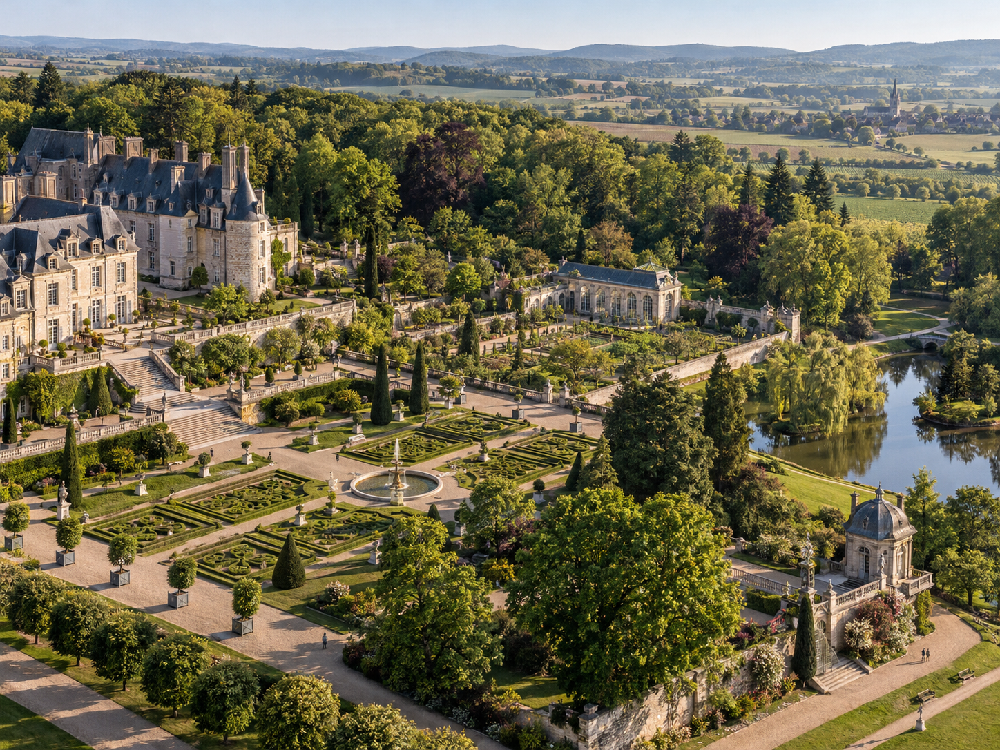
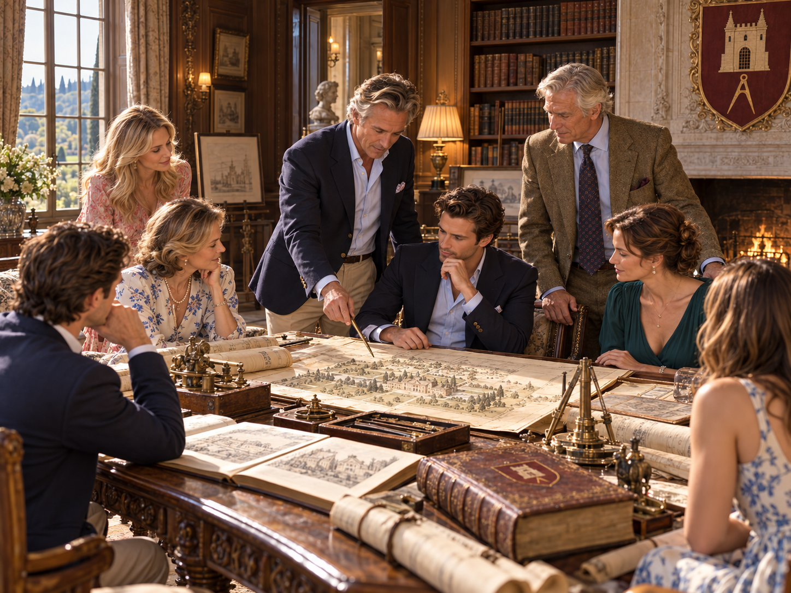

House de Villiers · Montrevaux & Family Traditions
Batch 6 — Numbered Image Identification
The six uploaded Batch 6 photographs are visually approved. Match each numbered original upload (1–6) to its lettered subject (A–F) from the reference collage. Images link to full resolution.
VISUALLY APPROVED — IDENTITY MAPPING PENDING. All six original PNGs remain intact in assets/. Upload numbers are based on alphabetical filename order, not subject identity. Images will not be renamed, moved, or canon-locked to the wrong subject without your confirmation.
Reference collage — A–F subjects
A
Montrevaux Family GatheringMultigenerational gathering on the château's limestone terrace
B
Private Dining at MontrevauxHistoric dining room prepared for an intimate family dinner
C
Montrevaux Gardens & GroundsFormal gardens, woodland, orangery, lake and château grounds
D
Moulin des Ormes — Private Mill RetreatHenri and Catherine’s restored Burgundian watermill retreat
E
Stewardship of GenerationsHouse family and archival stewardship across generations
F
An Evening at MontrevauxPrivate reception in the château salons and garden terrace
1Upload 1Scene letter awaiting identification

2Upload 2Scene letter awaiting identification

3Upload 3Scene letter awaiting identification

4Upload 4Scene letter awaiting identification

5Upload 5Scene letter awaiting identification

6Upload 6Scene letter awaiting identification

Next: confirm the assignments
Reply with the letter-to-number matches, for example A3, B5, C2, D4, E1, F6 (example only, not a proposed mapping). Once confirmed, the six images can be moved byte-for-byte into the House’s permanent asset directory, published in the dossier and recorded in a locked Batch 6 mapping and canon manifest.